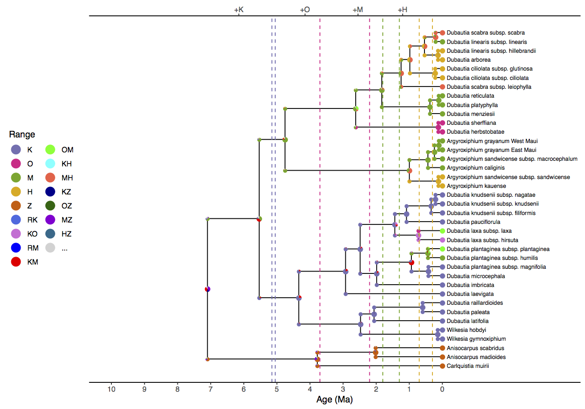
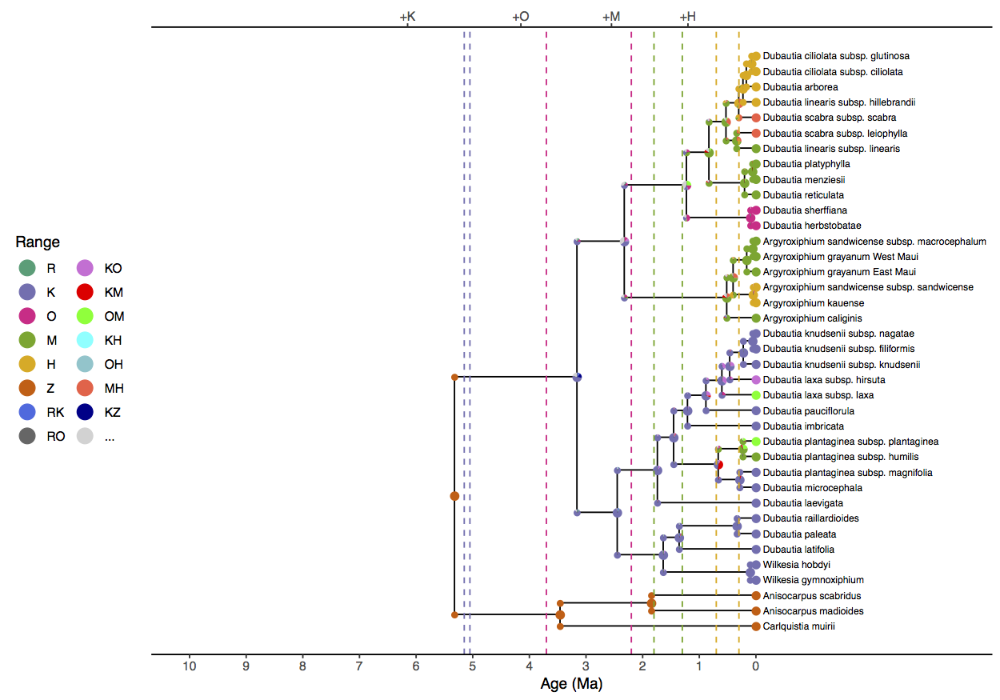

Introduction
This tutorial describes how to apply a biogeographic dating analysis. To do so, we will jointly estimate phylogeny and biogeography. One benefit of this joint inference strategy is that the biogeographic analysis will intrinsically accommodate phylogenetic uncertainty, both in terms of topology and branch lengths. Another is that paleogeographic evidence has the potential provide information about the geological timing of speciation events in the phylogeny (Ho et al. 2015). Finally, biogeographic data may lend support to certain phylogenetic relationships that have poor resolution otherwise.
Modeling the interactions between phylogeny, biogeography, and paleogeography should also, somehow, inform our posterior estimates of divergence times throughout the clade. After all, an island cannot be colonized before it comes into existence. But encoding this intuition into our phylogenetic model requires some special considerations.
As mentioned in the Simple DEC model tutorial, Hawaiian silverswords are nested within the subtribe Madiinae, alongside the tarweeds, a clade of plants inhabiting in western North America. Fossil pollen evidence indicates that Madiinae diversified during a period of aridification from 15–5 Ma in the western regions of North America Baldwin et al. (1991). It’s clear that silverswords colonized Hawaii from western North America, but the timing of the event is difficult to estimate. Even though the oldest Hawaiian island they inhabit is Kauai, it is possible that silverswords first colonized older islands in the Emperor Island chain that predate the formation of Kauai (>5 Ma).
This makes the application of standard node-based biogeographic calibrations challenging, because it would require a strong assumption about when and how many times the oldest silversword lineages colonized Kauai. Did silverswords colonize Kauai once directly from the California coast? Or did the colonize the younger islands multiple times from older islands in the chain? And did the event occur immediately after Kauai surfaced or much later? Because we cannot observe the timing and nature of this dispersal event directly, we will integrate over all possible evolutionary histories using process-based biogeographic dating method described in Landis (2017).

The basic idea is that an empirically informed epoch model is capable of creating conditions that favor key evolutionary transitions to occur during one time interval over another. Unlike the time-homogeneous probabilities that arise from, say, a molecular substitution process, these age-dependent transition probabilities may identify rate from time, and thus generate information about branch lengths in units of absolute time (). A biogeographic process that is constrained by paleogeographic connectivity is well-suited to this purpose.
Note: like all dating methods, including node calibration methods, tip dating methods, and fossilized birth death dating methods, process-based biogeographic dating estimates are prior sensitive and dataset dependent. Applying this model to alternative data sets should be done with care!
Another note: This tutorial describes an analysis that is similar, but not identical, to the analysis conducted in Landis et al. (2018).
Much of this tutorial will be similar to the previous sections, except we are adding a birth-death process and a molecular substitution process to the model graph.
Analysis
To use date the silversword radiation using biogeography, it is necessary that we transition from our simpler 4-area model to a richer 6-area model (see ). The mainland area (Z) is necessary to force the silversword and tarweed clade to originate apart from the islands. The area corresponding to the older island chain (R) is necessary because we do not know a priori whether silverswords colonized the modern islands directly from the mainland (Z $\rightarrow$ K), or first colonized R and only later dispersed into the younger islands any number of times (Z $\rightarrow$ R $\rightarrow$ K). Thus, adding these two areas allows the silversword origin time to precede the formation of Kauai when the dispersal rate is large.
Additionally, we will add three tarweed taxa to our dataset, increasing the total number of taxa to 38. We’ll use a molecular alignment for the internal transcribed spacer (ITS) to estimate the phylogeny, which is a 657bp non-coding locus that is historically important for plant systematics. Because the locus is relatively short, it will also leave us with a fair amount of phylogenetic uncertainty in branch length and topology estimates. However, because we’re estimating phylogeny and biogeography, it will be correctly incorporated into our ancestral range estimates.
As usual, we’ll begin by creating variables to manage our input and output files
range_fn = "data/n6/silversword.n6.range.nex"
mol_fn = "data/n6/silversword.mol.nex"
tree_fn = "data/n6/silversword.tre"
out_fn = "output/epoch_phy"
geo_fn = "data/n6/hawaii.n6"
times_fn = geo_fn + ".times.txt"
dist_fn = geo_fn + ".distances.txt"
Add the analysis helper variables
n_gen = 25000 # more parameters, longer run!
Read in the molecular alignment
dat_mol = readDiscreteCharacterData(mol_fn)
Read in the species ranges for six areas
dat_range_01 = readDiscreteCharacterData(range_fn)
Compute the number of ranges when ranges may only be one or two areas in size
n_areas <- dat_range_01.nchar()
max_areas <- 2
n_states <- 0
for (k in 0:max_areas) n_states += choose(n_areas, k)
Then format the dataset for the reduced state space
dat_range_n = formatDiscreteCharacterData(dat_range_01, "DEC", n_states)
Record the complete list of range descriptions to file
state_desc = dat_range_n.getStateDescriptions()
state_desc_str = "state,range\n"
for (i in 1:state_desc.size())
{
state_desc_str += (i-1) + "," + state_desc[i] + "\n"
}
write(state_desc_str, file=out_fn+".state_labels.txt")
Read the minimum and maximum ages of the island complexes
time_bounds <- readDataDelimitedFile(file=times_fn, delimiter=" ")
n_epochs <- time_bounds.size()
Read in the connectivity matrices between the six areas
for (i in 1:n_epochs) {
epoch_fn[i] = geo_fn + ".connectivity." + i + ".txt"
connectivity[i] <- readDataDelimitedFile(file=epoch_fn[i], delimiter=" ")
}
Read the geographical distances between areas
distances <- readDataDelimitedFile(file=dist_fn, delimiter=" ")
Remember that we are estimating the phylogeny as part of this analysis. In general, it is possible that certain combinations of phylogeny, biogeography, and paleogeography have zero-valued likelihoods should the epoch model introduce reducible rate matrix structures [see the supplemental of (missing reference)]. The initial MCMC state, however, must have a non-zero probability for it to work properly. Although it may not be needed, we will provide tree_init as a starting tree for the tree variable that we will create to be safe.
tree_init = readTrees(tree_fn)[1]
We will record some basic information about the taxon set, the number of taxa, and the number of branches in the tree
taxa = tree_init.taxa()
n_taxa = taxa.size()
n_branches = 2 * n_taxa - 2
The Tree Model
Because we will estimate the topology and branch lengths parameters, the tree variable must be declared as a stochastic node with a prior distribution. For this, we’ll use a constant rate birth-death process.
Assign root age with a maximum age of 15 Ma to reflect the ecological root age calibration for Californian tarweeds (Baldwin and Sanderson 1998). No assumption is made about the minimum root age.
root_age ~ dnUniform(0, 15)
Add a move to update the root age
moves = VectorMoves()
moves.append( mvScale(root_age, weight=5) )
Assign the proportion of sampled taxa (we have a non-uniform sampling scheme, but this should suffice).
rho <- 35/50
Assign the birth and death priors. It is important to note that the birth and death priors induce a root age distribution through the birth-death process.
birth ~ dnExp(10)
moves.append( mvScale(birth, weight=2) )
death ~ dnExp(10)
moves.append( mvScale(death, weight=2) )
Instantiate a tree variable generated by a birth-death process
tree ~ dnBDP(lambda=birth, mu=death, rho=rho, rootAge=root_age, taxa=taxa)
Add topology and branch length moves
moves.append( mvNNI(tree, weight=n_branches/2) )
moves.append( mvFNPR(tree, weight=n_branches/8) )
moves.append( mvNodeTimeSlideUniform(tree, weight=n_branches/2) )
moves.append( mvSubtreeScale(tree, weight=n_branches/8) )
moves.append( mvTreeScale(tree, root_age, weight=n_branches/8) )
Provide a starting tree to ensure the biogeographic model has non-zero likelihood
tree.setValue(tree_init)
root_age.setValue(tree_init.rootAge())
The molecular model
To inform our branch lengths (in relative time units) and our topology, we will specify a simple HKY+$\Gamma4$+UCLN model of molecular substitution (Hasegawa et al. 1985; Yang and Nielsen 1998; Drummond et al. 2006).
First specify a base rate for the molecular clock. This prior is uniform over orders of magnitude, between $10^{-6}$ and $10^3$, and was chosen to minimize its influence on the tree height.
rate_mol ~ dnLoguniform(1E-6, 1E0)
rate_mol.setValue(1E-2)
moves.append( mvScale(rate_mol, lambda=0.2, weight=4) )
moves.append( mvScale(rate_mol, lambda=1.0, weight=2) )
Assign log-normal relaxed clock rate multipliers to each branch in the tree. These priors have a mean of 1 so each branch prefers a strict clock model in the absence of data.
branch_sd <- 1.0
branch_mean <- 0.0 - 0.5 * branch_sd^2
for (i in 1:n_branches) {
branch_rate_multiplier[i] ~ dnLognormal(mean=branch_mean, sd=branch_sd)
branch_rates[i] := rate_mol * branch_rate_multiplier[i]
moves.append( mvScale(branch_rate_multiplier[i]) )
}
moves.append( mvVectorScale(branch_rate_multiplier, weight=3) )
Now we’ll create an HKY rate matrix. First, we create a gamma-distributed transition-transversion (Ts/Tv) rate ratio with prior with mean equal to one
kappa ~ dnGamma(2,2)
moves.append( mvScale(kappa) )
then create a flat Dirichlet prior on the base frequencies over A, C, G, and T
bf ~ dnDirichlet([1,1,1,1])
moves.append( mvSimplexElementScale(bf, alpha=10, weight=2) )
and, finally, combine the base frequencies and Ts/Tv rate ratio to build the rate matrix
Q_mol := fnHKY(kappa, bf)
Next, we’ll create a $+\Gamma4$ across-site rate variation model. First, we need a parameter to control the amount of site rate variation
alpha ~ dnUniform(0,50)
moves.append( mvScale(alpha) )
and a discretized Gamma distribution with four categories
site_rates := fnDiscretizeGamma(alpha, alpha, 4)
The distribution of site rates categories has mean equal to one and
variance equal to $1/\alpha$. When alpha grows small, the
amount of site rate heterogeneity increases. When alpha is
large, the variance shrinks to zero, and the site rate multipliers of
site_rates converge to the value 1.
Finally, we’ll create our molecular model of substitution
m_mol ~ dnPhyloCTMC(Q=Q_mol,
tree=tree,
branchRates=branch_rates,
siteRates=site_rates,
type="DNA",
nSites=dat_mol.nchar())
and attach the ITS alignment
m_mol.clamp(dat_mol)
The biogeographic model
The biogeographic model is identical to that described in Section , so redundant details are omitted here.
First, create the biogeographic rate parameter.
rate_bg ~ dnLoguniform(1E-4,1E2)
rate_bg.setValue(1E-2)
moves.append( mvScale(rate_bg, lambda=0.2, weight=4) )
moves.append( mvScale(rate_bg, lambda=1.0, weight=2) )
The relative dispersal rate is fixed to 1
dispersal_rate <- 1.0
the distance scale parameter
distance_scale ~ dnUnif(0,20)
distance_scale.setValue(0.001)
moves.append( mvScale(distance_scale, weight=3) )
Next, create dispersal rates that are functions of distance between all pairs of areas, but between areas that exist during epoch i!
for (i in 1:n_epochs) {
for (j in 1:n_areas) {
for (k in 1:n_areas) {
dr[i][j][k] <- 0.0
if (connectivity[i][j][k] > 0) {
dr[i][j][k] := dispersal_rate * exp(-distance_scale * distances[j][k])
}
}
}
}
Create the extirpation rates
log_sd <- 0.5
log_mean <- ln(1) - 0.5*log_sd^2
extirpation_rate ~ dnLognormal(mean=log_mean, sd=log_sd)
moves.append( mvScale(extirpation_rate, weight=2) )
for (i in 1:n_epochs) {
for (j in 1:n_areas) {
for (k in 1:n_areas) {
er[i][j][k] <- 0.0
}
er[i][j][j] := extirpation_rate
}
}
Build a rate matrix for each time interval
for (i in 1:n_epochs) {
Q_DEC[i] := fnDECRateMatrix(dispersalRates=dr[i],
extirpationRates=er[i],
maxRangeSize=max_areas)
}
Treat epoch times as random variables, except the present is always the present (or is it?).
for (i in 1:n_epochs) {
time_max[i] <- time_bounds[i][1]
time_min[i] <- time_bounds[i][2]
if (i != n_epochs) {
epoch_times[i] ~ dnUniform(time_min[i], time_max[i])
epoch_width = time_bounds[i][1] - time_bounds[i][2]
moves.append( mvSlide(epoch_times[i], delta=epoch_width/2) )
} else {
epoch_times[i] <- 0.0
}
}
Wrap the vector of rate matrices with the fnEpoch rate
generator function
Q_DEC_epoch := fnEpoch(Q=Q_DEC, times=epoch_times, rates=rep(1, n_epochs))
Here, we treat the probability of different types of cladogenetic events as a random variable to be estimate.
clado_event_types <- [ "s", "a" ]
p_sympatry ~ dnUniform(0,1)
p_allopatry := abs(1.0 - p_sympatry)
moves.append( mvSlide(p_sympatry, delta=0.1, weight=2) )
clado_event_probs := simplex(p_sympatry, p_allopatry)
P_DEC := fnDECCladoProbs(eventProbs=clado_event_probs,
eventTypes=clado_event_types,
numCharacters=n_areas,
maxRangeSize=max_areas)
Based on fossil pollen evidence, force range state and the root of the tree to be the mainland area (Z)
rf_DEC_tmp <- rep(0, n_states)
rf_DEC_tmp[n_areas+1] <- 1 # Mainland (Z) is the only possible starting state
rf_DEC <- simplex(rf_DEC_tmp)
Create the phylogenetic model of range evolution
m_bg ~ dnPhyloCTMCClado(tree=tree,
Q=Q_DEC_epoch,
cladoProbs=P_DEC,
branchRates=rate_bg,
rootFrequencies=rf_DEC,
type="NaturalNumbers",
nSites=1)
Attach the species range dataset to the model
m_bg.clamp(dat_range_n)
To easily identify interactions between the posterior estimates of island ages and divergence times, we’ll create a deterministic node to monitor the age of the silversword radiation. First, create a deterministic node to monitor the crown age of the silversword radiation
ingroup_clade <- clade("Wilkesia_hobdyi",
"Dubautia_reticulata",
"Dubautia_microcephala",
"Argyroxiphium_caliginis")
ingroup_age := tmrca(tree, ingroup_clade)
Next, create a vector of variables to report the posterior probability
that the clade originates before a given island. When the
first argument in of the ifelse function returns
true, the node has value 1 and 0
otherwise. Thus, the mean of this variable gives the posterior
probability that the inequality is satisfied.
for (i in 1:n_epochs) {
ingroup_older_island[i] := ifelse(ingroup_age > epoch_times[i], 1, 0)
}
Create the standard monitors. One difference is that the
mnFile monitor will now record the posterior distribution
for the tree variable, whereas the previous two tutorials
assumed tree was fixed.
monitors = VectorMonitors()
monitors.append( mnScreen(printgen=100, ingroup_age) )
monitors.append( mnModel(file=out_fn+".model.log", printgen=100) )
monitors.append( mnFile(tree, filename=out_fn+".tre", printgen=100) )
monitors.append( mnJointConditionalAncestralState(tree=tree,
ctmc=m_bg,
type="NaturalNumbers",
withTips=true,
withStartStates=true,
filename=out_fn+".states.log",
printgen=100) )
monitors.append( mnStochasticCharacterMap(ctmc=m_bg,
filename=out_fn+".stoch.log",
printgen=100) )
Because ingroup_older_island does not contribute to the
model likelihood, it must be manually introduced to the model object.
Compose the model object.
mymodel = model(m_bg, ingroup_older_island)
Create the MCMC object and run the analysis.
mymcmc = mcmc(mymodel, moves, monitors)
mymcmc.run(n_gen)

Results
Example results are located at and
To understand the influence of the epoch model on ancestral range and
divergence time estimation, it is important to run addition analyses
with alternative settings. Scripts to jointly estimate molecular
evolution, historical biogeographic, and phylogenetic parameters are
available as scripts/run_simple_phy.Rev and
scripts/run_epoch_phy.Rev. The “epoch” analysis is
identical to the analysis just described. The “simple” analysis is
similar to the “epoch” analysis, except it substitutes the
paleogeography-aware model of range evolution (see Section ) for a paleogeography-naive model (see Section
).

We see that simple analysis () estimates the
ancestral range at the root of the clade as Maui+Mainland (MZ) or Hawaii+Mainland (HZ). This is
unrealistic, both because of the extreme distance between those areas,
but also the simple analysis estimates the root age to be 10.3 (HPD95%
4.6, 15.0) Ma, well before Maui originated. (Date estimates are reported
in the simple_phy.mcc.tre and
simple_phy.model.log files.) The simple model also infers
Kauai+Maui (KM) as the ancestral range of living silverswords and a
ingroup crown age of 6.4 (HPD95% 2.2, 11.0) Ma, which is impossibly ancient
given the islands’ ages.
The epoch analysis () produces more sensible ancestral range estimates, with Kauai being colonized first, and younger islands only being colonized as they become available. The crown age of silverswords is estimated as 3.3 (HPD95% 1.6, 5.0) Ma. When comparing the results to the earlier fixed-phylogeny epoch results in , we recover a greater role for cladogenesis for the younger speciation events. These two analyses only differ in terms of whether the phylogeny is fixed or estimated, so it is likely a result of phylogenetic error in the fixed tree.

epoch_times[1]).The
right panel conditions of paleogeography, which prefers a silversword
crown age that follows the formation of Kauai.
epoch_times[1]). The right panel conditions of paleogeography, which prefers a silversword crown age that follows the formation of Kauai.In Tracer, one can look at the sampled posterior of island ages in comparison the origination time of crown silverswords (). The left panel shows the simple analysis, where crown silverswords often originate before the formation of Kauai. The right panel shows that crown silverswords probably originated before the formation of Maui, but after the formation of Kauai.
| Model | $P(a_S>a_K)$ | $P(a_S>a_O)$ | $P(a_S>a_M)$ | $P(a_S>a_H)$ |
|---|---|---|---|---|
| simple | 0.68 | 0.94 | 1.00 | 1.00 |
| epoch | 0.04 | 0.59 | 0.99 | 1.00 |
By tabulating the results of the deterministic variable
ingroup_older_island, we measure the posterior
probability that crown silverswords originated before or after each
particular epoch in the model (). Treating
$Prob>0.95$ as significant support for an evolutionary outcome, the epoch
model produces strong support that crown silverswords originated after
the formation of Kauai, $Prob(a_S > a_K) = 1.0 - 0.04 > 0.95$ but less support
that they originated after the formation of Oahu,
$Prob(a_S > a_O) = 1.0 - 0.59 < 0.95$.
- Baldwin B.G., Kyhos D.W., Dvorak J., Carr G.D. 1991. Chloroplast DNA evidence for a North American origin of the Hawaiian silversword alliance (Asteraceae). Proceedings of the National Academy of Sciences. 88:1840–1843. 10.1073/pnas.88.5.1840
- Baldwin B.G., Sanderson M.J. 1998. Age and rate of diversification of the Hawaiian silversword alliance (Compositae). Proceedings of the National Academy of Sciences. 95:9402–9406. 10.1073/pnas.95.16.9402
- Drummond A.J., Ho S.Y.W., Phillips M.J., Rambaut A. 2006. Relaxed Phylogenetics and Dating with Confidence. PLoS Biology. 4:e88. 10.1371/journal.pbio.0040088
- Hasegawa M., Kishino H., Yano T. 1985. Dating of the Human-Ape Splitting by a molecular Clock of Mitochondrial DNA. Journal of Molecular Evolution. 22:160–174. 10.1007/BF02101694
- Ho S.Y.W., Tong K.J., Foster C.S.P., Ritchie A.M., Lo N., Crisp M.D. 2015. Biogeographic calibrations for the molecular clock. Biology Letters. 11:20150194. 10.1098/rsbl.2015.0194
- Landis M.J. 2017. Biogeographic dating of speciation times using paleogeographically informed processes. Systematic Biology. 66:128–144. 10.1093/sysbio/syw040
- Landis M.J., Freyman W.A., Baldwin B.G. 2018. Retracing the Hawaiian silversword radiation despite phylogenetic, biogeographic, and paleogeographic uncertainty. bioRxiv.:301887. 10.1101/301887
- Yang Z., Nielsen R. 1998. Synonymous and nonsynonymous rate variation in nuclear genes of mammals. Journal of Molecular Evolution. 46:409–418. 10.1007/PL00006320